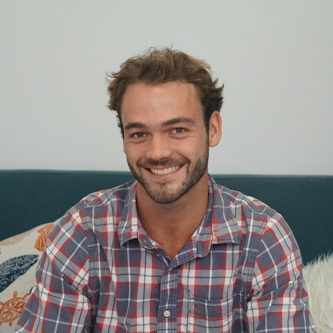

Flynn Simonis
he/him · Occupational therapist · GOALS Psychology · Brisbane & telehealth
Paediatric occupational therapy led by the child’s own interests, in clinic, at home or at school.
Experience
- Occupational therapist, GOALS Psychology, Fortitude Valley
- Paediatric occupational therapy, including play therapy and parent training
- Functional Capacity Assessments (FCAs) and report writing
- Group programs including LEGO, Minecraft and Ninja Warrior-style social and movement programs
- Outdoor adventure and nature camps building independence, resilience and confidence
- Sensory profiles, emotional regulation needs and functional challenges
- Family-centred practice with caregivers, schools and multidisciplinary teams
- In-clinic, home visit, kindergarten and school visit appointments
About
Flynn works with toddlers, children, teenagers and young adults. He is experienced working with clients who have experienced developmental trauma, neurodivergence, autism, Attention-Deficit Hyperactivity Disorder (ADHD), school refusal / school can’t, developmental delay, non-verbal communication profiles, Generalised Anxiety Disorder (GAD), emotional regulation, parenting support, intellectual disability, Oppositional Defiant Disorder (ODD), Rett Syndrome, and Muscular Dystrophy and many other presentations. Flynn enjoys supporting children with varying communication styles, sensory profiles, emotional regulation needs, and functional challenges.
Flynn is particularly passionate about paediatric occupational therapy including play therapy and parent training. He facilitates sessions that are guided by his client’s interests, recognising that children engage and learn best when therapy is meaningful and motivating towards skill development for participation in everyday life. Flynn emphasises a foundation of communication with families, schools and multidisciplinary teams, to create a safe, supportive, creative and fun therapy environment. He values family-centred practice in working with caregivers to ensure that recommended strategies are practical, achievable and able to be easily implemented into daily routines. Flynn offers in-clinic, home visits, kindergarten and school visit appointments where appropriate towards his clients’ goals.
Flynn is also experienced with Functional Capacity Assessments (FCAs) and report writing, and facilitating group programs including LEGO, Minecraft and Ninja Warrior-style social and movement programs, outdoor adventure and nature camps, all supporting goals including social skills, teamwork, and motor development, building independence, resilience, and confidence in children and young people.
Details
- Qualifications
- Occupational therapist
- Reach
- Clinic appointments in Fortitude Valley, telehealth Australia-wide, and home, school and community visits across Brisbane
- Appointments
- Clinic, home, kindergarten and school visits; times set with the clinic
- Billing
- Set and charged by the clinic; quoted when you book
- Wheelchair access
- Yes: level access from the same-level car park, with free one-hour client parking in the centre
What a session costs
GOALS Psychology does not publish a session fee. The clinic quotes it when you book, and a free 15-minute call for new clients can be booked online to ask what a session will cost before you commit to one.
Occupational therapy is not covered by a Mental Health Treatment Plan. It is commonly funded through the NDIS, private health extras, or a GP’s chronic disease management plan; the clinic can tell you what applies to you.
The fee is set and charged by the clinic you book with; ADHDme receives no part of it. It is described here rather than shown as a number because the clinic has not published one, and a guess would be worse than nothing.
GOALS Psychology is an independent clinic: it sets its own fees, availability and clinical approach, and ADHDme receives no part of what you pay. Everything above is Flynn Simonis’s own declaration; the headings are ours.